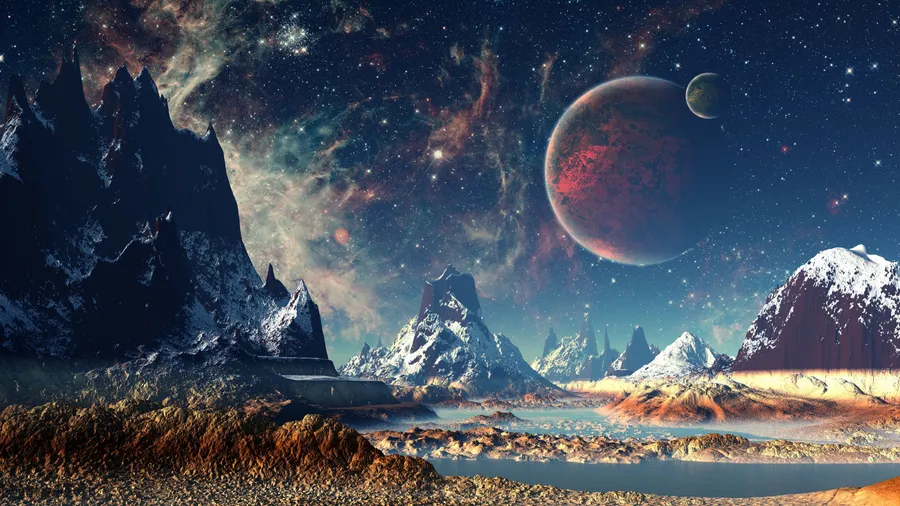

Interests
Outside of coursework and logistics, a few things keep me going.
Virtual Reality Gaming
VR is where I decompress. Being fully immersed in a world has also shaped how I think about UI and UX in VR, bad design isn't just annoying, it's disorienting. That perspective carries into how I approach web layout and user experience.
Science Fiction
Sci-fi is my go-to genre across books, games, and film. Some favorites:
- The Expanse's realistic physics, real political tension
- Ark Survival, a world-building and dino taming adventure is unmatched
- Mass Effect is probably why this site has a space theme

Space
The real thing is as compelling as the fiction. Watching rovers land and telescopes return images of galaxies billions of light years away never gets old. The scale of space puts everything (including debugging CSS at 2am) in perspective.